Những câu chuyện quanh tôi
🌟 Giá trị kinh doanh Amway qua tầm nhìn của FC Aranong
Câu chuyện về cơ hội bền vững và giá trị lâu dài của ngành hàng thiết yếu.
🏦 Nhân viên ngân hàng làm Amway
Câu chuyện Hoa (Bông) về hành trình thay đổi bản thân, sức khỏe và cuộc sống.
🩺 Bác sĩ làm Amway
Ông Chanunt Kunchayangkul chia sẻ cách tự quản lý chính mình để thành công.
🎓 Sinh viên nghèo làm Amway trở thành Global Leader
Câu chuyện Aom Pornpimon Pupat về hành trình từ sinh viên đến Executive Diamond.
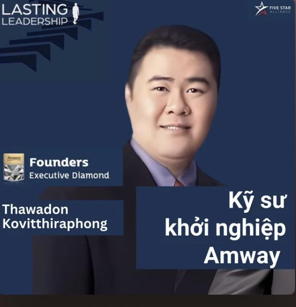
🛠️ Kỹ sư làm Amway
Câu chuyện về lựa chọn, quyết tâm và hành trình đạt Founders Executive Diamond.
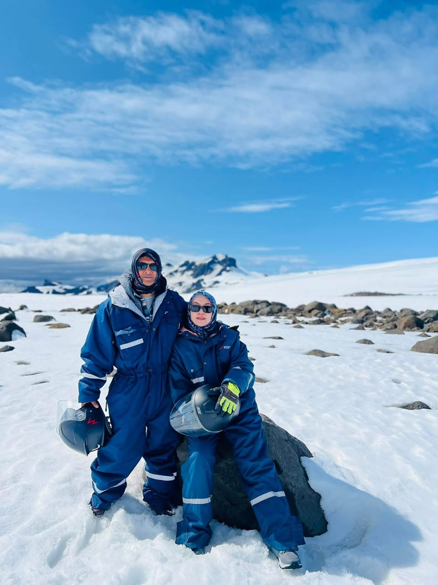
🌟 Công nhân viên chức làm Amway
Câu chuyện Diamond Sakeeyah Samapu vượt qua nghịch cảnh, kiên trì học hỏi và vươn lên Diamond.
💎 GO SILVER – XÂY DỰNG KINH DOANH BỀN VỮNG
Câu chuyện EDC Lyly về hành trình bền bỉ, xây nền vững chắc và phát triển lãnh đạo.
✨ Tại sao Amway đáng làm? – Ca Lữ Sâm Lâm
Câu chuyện về người bình thường với trái tim phi thường, dám kiên trì để viết lại cuộc đời.
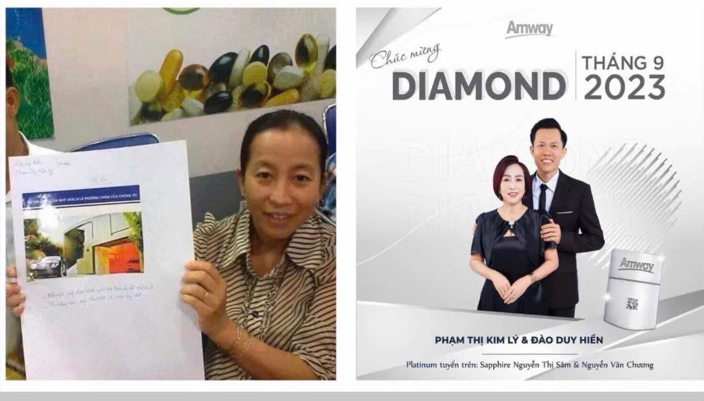
🔥 Hành trình bền bỉ của Diamond Phạm Thị Kim Lý
Câu chuyện chị Kim Lý vượt nghịch cảnh, kiên trì học hỏi và hành động để bứt phá cùng Amway.
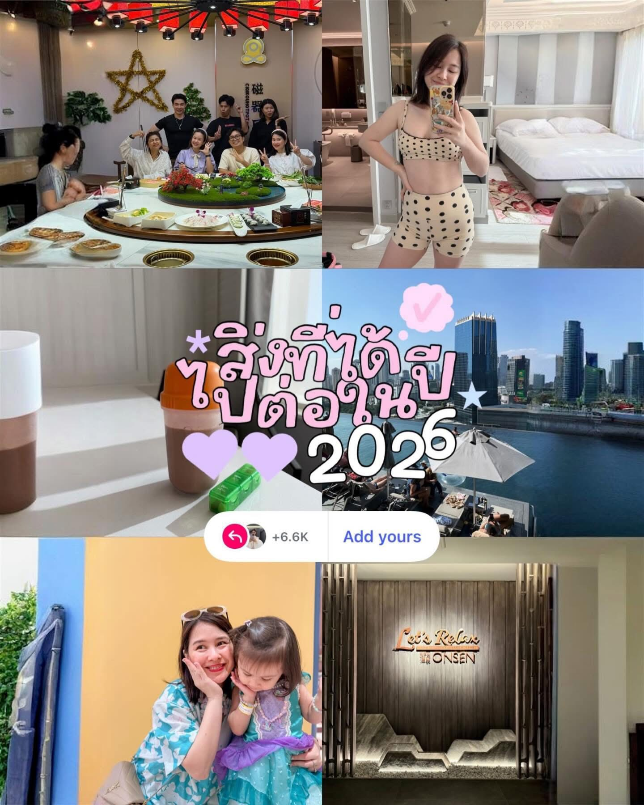
🎤 Ca sĩ The Voice (Thái Lan) lựa chọn con đường mới
Câu chuyện Jamaporn Saengthong hạ quyết tâm, lựa chọn con đường mới và kiên trì đến Founders Diamond.
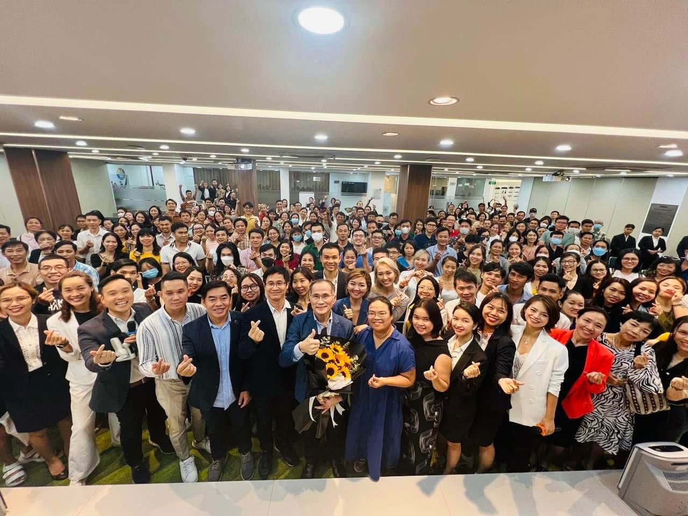
ĐỊNH VỊ CUỘC ĐỜI
Câu chuyện của Thầy Piboon Ditudom – diễn giả bậc thầy của Amway Thái Lan
🎙️ Spirit Talk – FDD Teerut: Amway là một phần cuộc đời
Câu chuyện Teerut lớn lên cùng Amway, đi qua mất mát và giữ vững niềm tin để không bỏ cuộc.

💎 Hành trình lựa chọn tự do của bác sĩ trẻ
Câu chuyện về một bác sĩ trẻ dám rẽ hướng, theo đuổi tự do và truyền cảm hứng cho những ước mơ lớn.
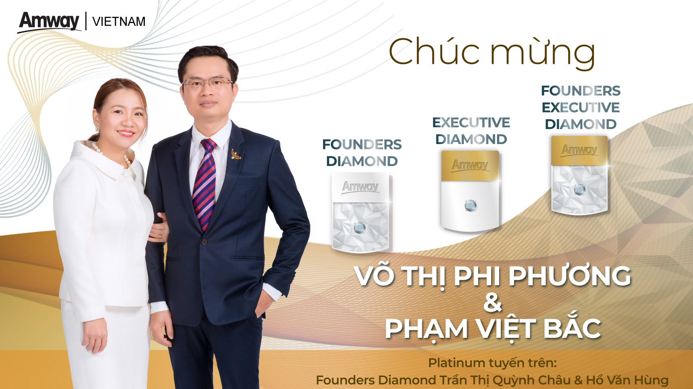
👩💼 CEO tập đoàn nghìn nhân viên lựa chọn kinh doanh mới vì tầm nhìn
Hành trình chị Võ Thị Phi Phương lựa chọn Amway vì tầm nhìn, từ câu chuyện bạn thân đến góc nhìn thị trường.
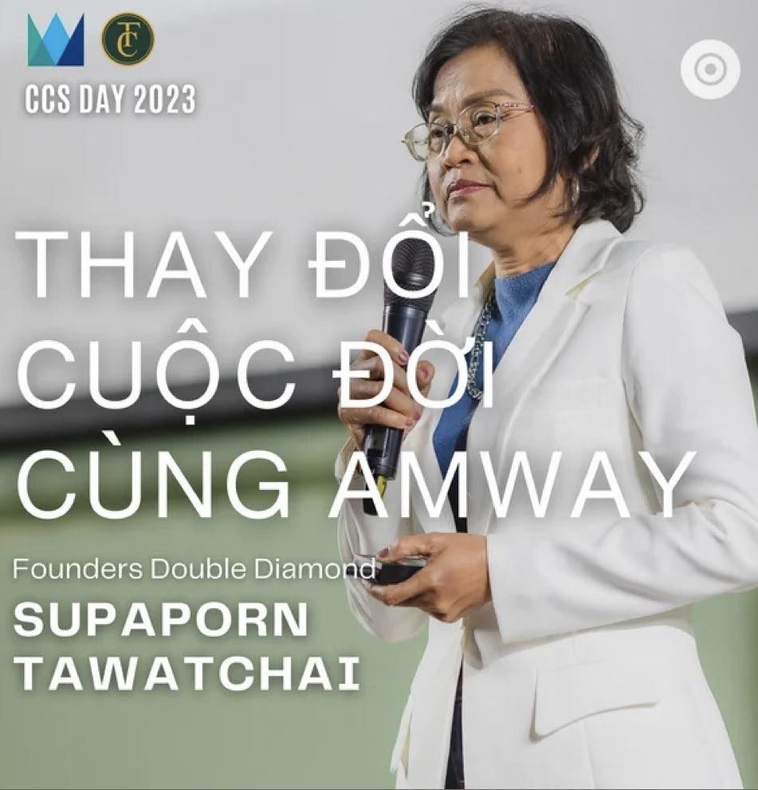
👩⚕️ Y tá và giáo viên làm Amway?
Câu chuyện Supaporn Tawatchai kiên trì mở house meeting, từ con số âm đến Founders Double Diamond.
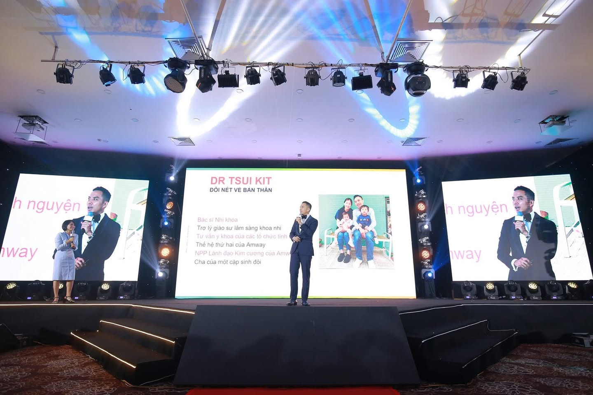
👨⚕️ Thế hệ thứ 2 làm Amway: Dr Tsui Kit Double Diamond
Câu chuyện của một bác sĩ nhi tìm tự do, quản trị thời gian và chinh phục mục tiêu trong 1 năm.
💼 Tại sao chúng ta cần độc lập tài chính khi còn trẻ?
Hành trình của Wayne Tan từ nghiên cứu sinh Tiến sĩ đến Founders EDC nhờ sự bền bỉ và lựa chọn đúng.
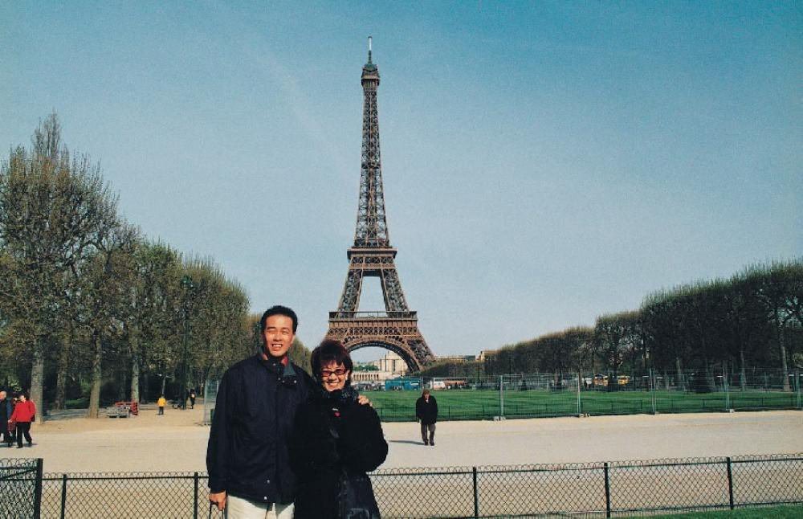
🏆 Học lớp 2 cũng có thể trở thành triệu phú
Câu chuyện FCA Lee Kim Soon kiên trì sau 32 lần từ chối để đổi đời cùng Amway.
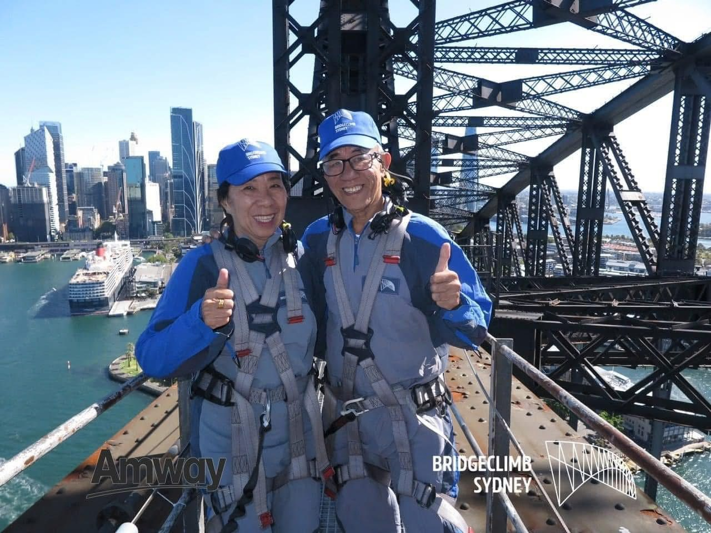
🌟 60 tuổi khởi nghiệp cùng Amway?
Hành trình dì Hai Sâm vững tin học tập, kiên trì chia sẻ để xây dựng hệ thống hơn 10.000 người.
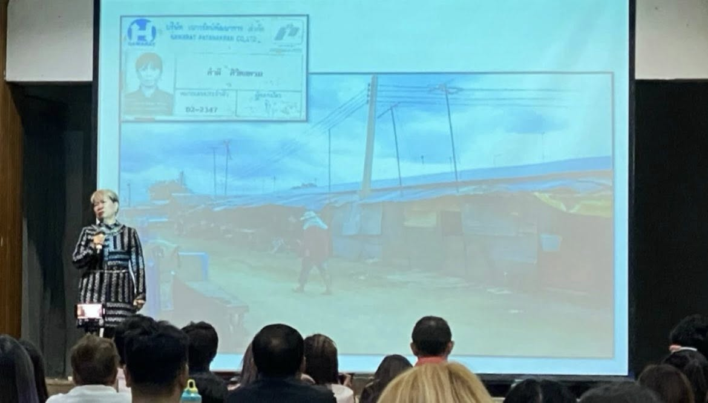
🌱 Một người siêu nghèo đổi đời nhờ Amway?
Câu chuyện Cô Tém từ tận cùng nghèo khó đến Platinum và cuộc sống mới đầy hy vọng.
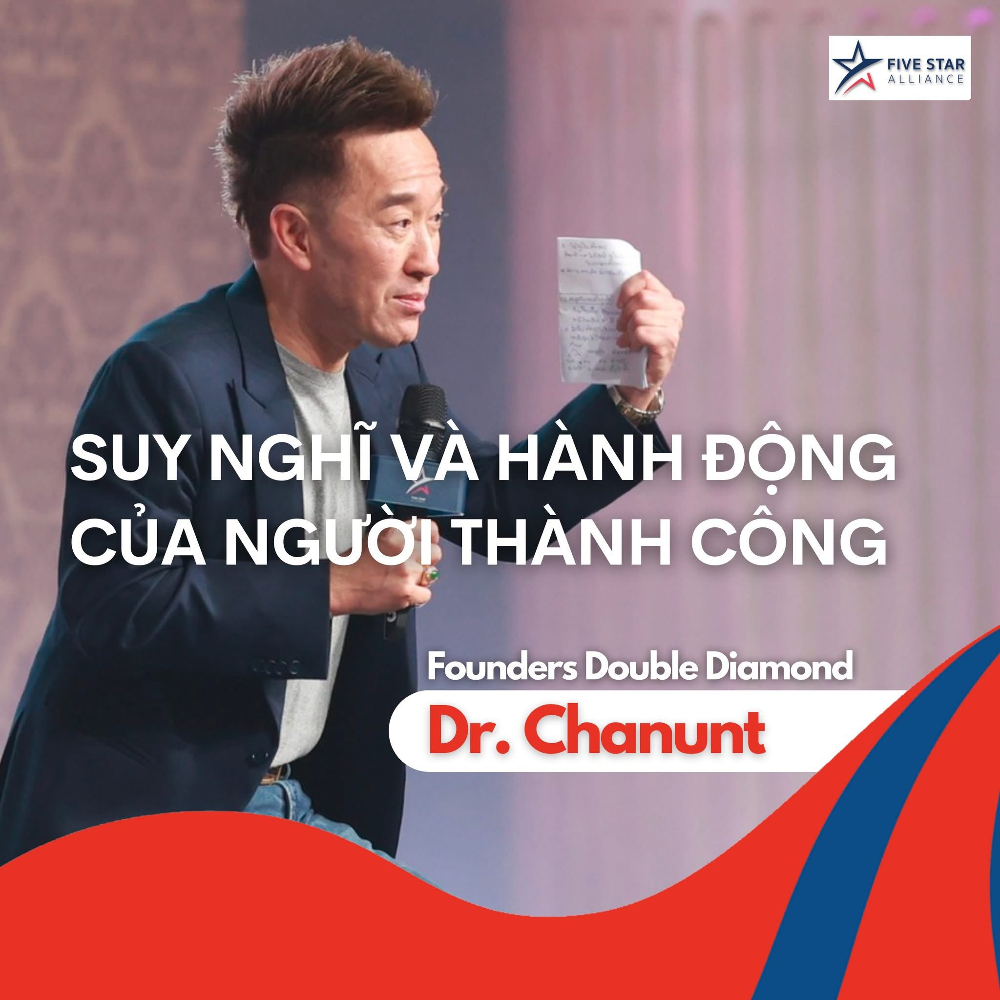
✨ Suy nghĩ và hành động của người thành công
Những bài học từ Dr. Chanunt (Thái Lan) về tính cách, lựa chọn và mục tiêu của người thành công.

🐄 Người nông dân quay lại Amway ở tuổi 42
Niềm tin bền bỉ, quyết tâm không bỏ cuộc và hành trình đổi đời sau gần 10 năm ấp ủ.

💡 Doanh nhân Vonchai - Amway là công việc dành cho người nghèo?
Câu chuyện doanh nhân Vonchai chọn Amway vì dòng thu nhập bền vững cho gia đình.